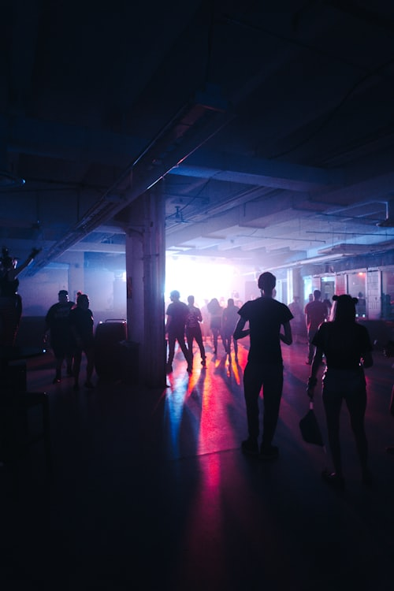

Main Stage · Beachfront
The High Tide
Our cathedral of sound facing straight out to sea. Headliners, full-throttle live bands and the sunset slot everyone fights for.
Headliners Live Sunset
Where the music meets the sea.
A wild, independent three-day festival of clashing genres, sand-between-your-toes sets and salt-air art. Six stages stacked along one stretch of beach — from sunrise folk in the Salt Chapel to 4am bass under the dunes.
RIPTIDE started in 2017 as a one-stage all-nighter on a borrowed strip of shingle. Eight years on we're still independent, still artist-run, and still allergic to the cookie-cutter festival formula. No corporate main-stage sponsorship. No €9 pints. Just a fierce, friendly crowd and a programme that refuses to sit in one genre lane.
We take over Gullrock Bay for one weekend in August — a working harbour town that hands us its beach, its lighthouse and its sea-front warehouses, and we hand it back covered in glitter, murals and very happy people.
Each stage has its own crew, its own sound and its own crowd. Wander between them all weekend — or pick your tribe and stay.
Our cathedral of sound facing straight out to sea. Headliners, full-throttle live bands and the sunset slot everyone fights for.
Headliners Live Sunset
A 2,000-capacity rave under canvas, half-buried in the dunes. House, disco and everything that makes your knees give out by 2am.
House Disco Late
Built from reclaimed boat timber, this is where guitar music lives — sweaty, loud and gloriously messy. New bands and cult favourites.
Indie Punk Rock
A candlelit timber chapel by the harbour wall. Hushed, beautiful and best experienced bleary-eyed at sunrise with a flask of something warm.
Folk Acoustic Choral
A blacked-out sea-front warehouse running till the gulls wake up. Techno, dub and broken beats for those who refuse to go to bed.
Techno Dub 4am
Our arts heart: installations, poetry, drag, life-drawing, workshops and the best people-watching on site. Open from noon, no wristband required.
Art Poetry Workshops
Between sets, RIPTIDE is a living gallery. Forty-foot light sculptures rise out of the dunes after dark. A flotilla of mirrored buoys turns the bay into a disco at low tide. Local muralists paint the harbour wall live across the weekend.
A nightly procession of hand-built paper lanterns from the lighthouse to the shore. Build yours in the Tidepool workshops.
Twelve emerging coastal artists, one converted fish market, zero entry fee. Open all weekend.
Guided cold-water dips at 6am with our resident open-water crew. Wetsuits optional, bravery essential.

"The best small festival in the country, no contest. Where else do you watch the sunrise from a sea swim, then a folk choir, then collapse in a dune?"
— Undertow Magazine"RIPTIDE books the bands you'll be obsessed with in eighteen months, and puts them on a beach. Genuinely magic, genuinely independent."
— The Coastal Review"I went on my own and made forty friends by Sunday. The friendliest crowd I've ever stood in. I've booked already for next year."
— Priya, RIPTIDE '24Weekend passes from £119. Camping, payment plans and day tickets available. The cheapest tiers always go first.